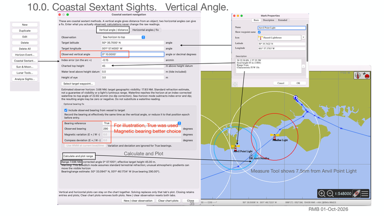

Previous | Contents | Next

10.0. Coastal Sextant Sights. Vertical Angle.
For illustration, True was used
Magnetic bearing better choice
Calculate and Plot
Measure Tool shows 7.5nm from Anvil Point Light
35
RMB 01-Oct-2026